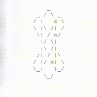

.oO*~ 🎲 ISAAC MEYER ☢️ ~*Oo.
Email:
Personal
Documents:
CV
ABOUT
This is the homepage of Isaac Meyer. I am a software engineer at Radiant Industries, a nuclear microreactor company, where I work on our set of low order simulation tools for multiphysics simulation (dubbed the "digital twin"). I completed a post-doc at Massachusetts General Hospital in the Radiation Oncology department focusing on Monte Carlo transport, and I obtained my Ph.D. at MIT in the department of Nuclear Science and Engineering where my focus was uncertainty propagation of neutron cross section data.
DIGITAL FOOTPRINTS

Web design inspiration from my friend
Adrianne.